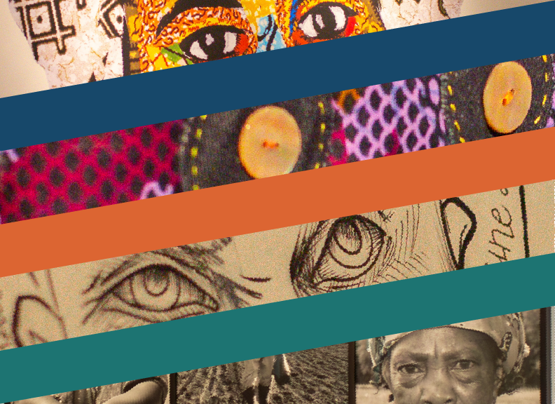

Gavin Nathaniel Bayer
Portfolio of Work
Dialogues, Diasporas, and Detours Through Africa - Exhibition Catalogue
I worked with a team of two other graphic designers to create the catalogue for the Dialogues, Diasporas, and Detours Through Africa exhibition, hosted by the Fitchburg Art Museum from 10/14/23 to 1/14/24. I was in charge of the back, front, and inner covers, and went through numerous designs with several iterations each before settling on the final product. Prior designs were occasionally revisited or moved to different pages.
Front Cover Iterations:
Inner Cover Iterations:
Final Covers:
